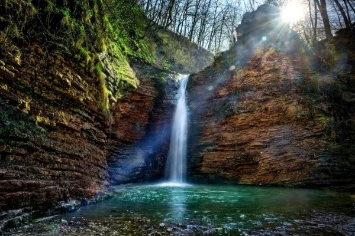
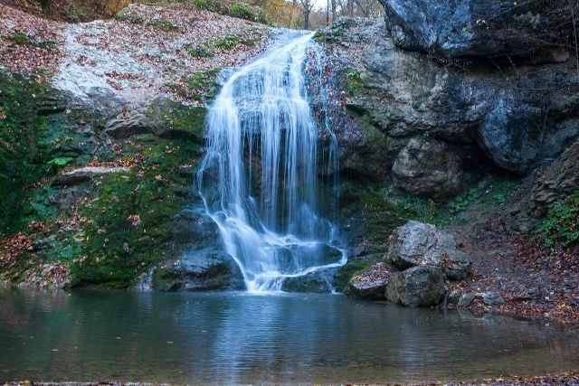
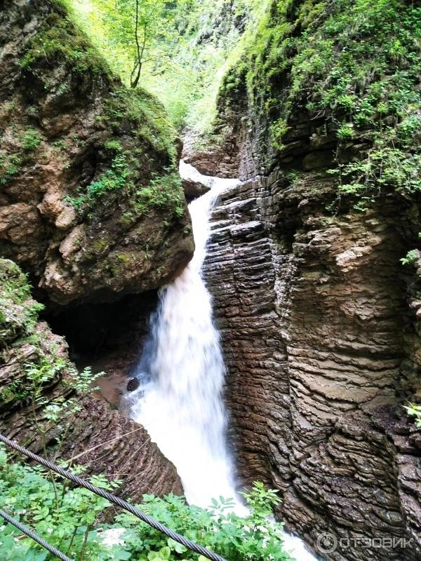
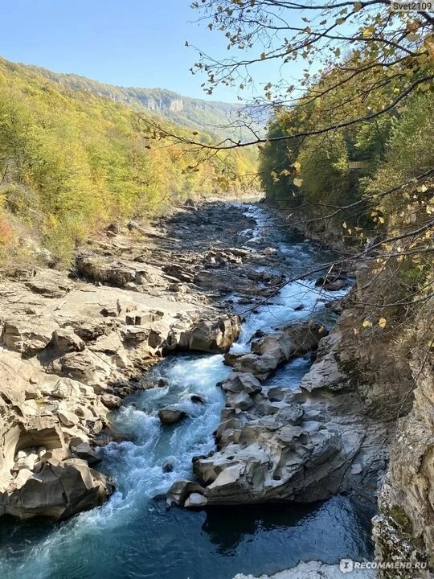
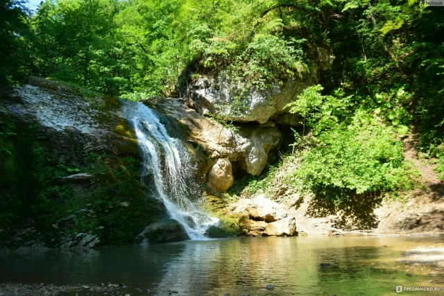
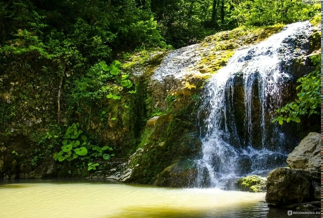

Галерея
Красота Руфабго
Вдохновляющие виды каскадов, ущелья и буковых лесов




Захватывающий каскад водопадов в уникальном ущелье, где древний океан оставил свои следы на скалах
Лаго-Наки – это огромное по площади (800 кв. км) горное плато на западе Кавказа в окружении высоких хребтов. Именно здесь находятся водопады Руфабго. Территория плато располагается одновременно в Адыгее и в Краснодарском крае.
История Лаго-Наки начинается миллионы лет назад, когда здесь располагался древний океан Тетис. Его воды сформировали уникальный ландшафт, а отступая, оставили после себя напитанную минералами и солями землю. Сейчас на камнях и скалах можно увидеть отпечатки моллюсков и кораллов.
Ручей Руфабго – левый приток реки Белой. Он начинается на севере хребта Азиш-Тау и почти 20 км несётся по ущельям и горным склонам, пробивая себе русло в монолитной скале. Местами ширина каньона составляет всего 2–3 метра, образуя своеобразный лабиринт для дикой водной стихии.
Следы древнего океана на скалах
Уникальная экосистема на высоте
Живописные ущелья и древние деревья
Стоянки древних поселений рядом с устьем


До первых пяти водопадов добраться легко даже с ребёнком по оборудованной тропе с указателями
Небольшой водопад у края ущелья. Вода тремя каскадами впадает в реку Белую. Удобен для обзора с моста.
Поток срывается с 6 метров, формируя внизу чашу, где отдыхают туристы. Спуск по удобной лесенке с поручнем.
Невысокий, но привлекательный каскад. Потоки воды ниспадают по ступенчатому склону в маленькое озерцо.
Легендарный каскад: река огибает огромный валун и срывается вниз. Весной вода становится красноватой из-за глины.
Сложный маршрут, требующий снаряжения. Вода падает с 5 метров в небольшой круглый водоем среди скал.
Узкая лента воды падает с высоты пятиэтажного дома. Рядом красивое озерцо, где можно освежиться летом.
Древнее адыгское предание о злом великане и смелом юноше
Согласно легенде, в ущелье реки Белой поселился великан-маг Руфабго. Он обладал невероятной силой, пил силы из пещеры Сквозной и поработил поселения в долине, уводя молодых красавиц.
Юноша Хаджах, любивший одну из девушек, отправился к доброму колдуну Мезмаю. Тот дал ему волшебный порошок, чтобы отвлечь великана, и велел вырвать его сердце, бросив как можно дальше в тёмные стены ущелья.
Хаджах выполнил указание. Сердце превратилось в огромный валун, который перекрыл путь ручью. Так образовался мощный водопад, получивший своё название в память о злодее.

Выберите удобный способ: быстрый платный или длинный бесплатный путь вдоль реки
Начинается в устье Большого Руфабго. Проходит по мосту с красивейшим видом. Рядом расположены беседки, сувениры и кафе.
Начинается у Хаджохской теснины, ведёт вдоль левого берега реки Белой. Проходит через урочище «Турецкий базар», пещеру Сквозная и черкесские сады.
Как добраться, режим работы и важные рекомендации для посетителей
Вдохновляющие виды каскадов, ущелья и буковых лесов


